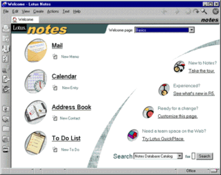

Influential Pieces of Software
Lotus/IBM Notes
 Described as "enterprise software before enterprise software was cool" by ZDNet's David Gewirtz, Lotus Notes was a revolutionary collaboration tool. Lotus Notes got its start in University of Illinois's Computer-based Education Research Laboratory (CERL), in the form of PLATO Notes (1973), a simple bug reporting system with user ID and date tags, along with private file locking to prevent unauthorized users from tampering with the files; only the administrators and bug reporter would be able to edit that specific report file. In 1976, a successor, PLATO Group Notes, added features like note file organization, viewers access controls, anonymous/administrator tagged notes, commenting, sharing notes between mainframes, and multi-player game communications. Multiple developers from PLATO Notes worked on a product for personal computers, which was funded by Lotus Development Corporation. Lotus Notes was best known for its client/user groupware systems. The client would be the employee, they could use and store their own notes on their computer, or use their local network to upload their notes to the main server PC, which was able to communicate with all clients on the network. This was before email was popular, so this form of communication was mind-blowing for enterprise communications. When Apple released their Macintosh with a primarily Graphical User Interface, the Lotus Notes team decided to add their own GUI to Lotus Notes. Coupled with the ability for the users to customize their own Lotus Notes applications, Lotus Notes went on be a major commercial success with a long lifespan. In 1989, Lotus Notes 1.0 was released, and 35 thousand copies were sold within a year. In 1995, IBM bought Lotus, mainly to acquire Lotus Notes. IBM's technologies and funding was able to sustain and grow Lotus Notes even further, providing technologies like HTTP (HyperText Transfer Protocol) servers, which became the IBM Lotus Domino. IBM Lotus Domino acted as a rebrand/successor to Lotus Notes servers, and beginning with release 4.5, the Lotus Notes Server became Domino. Domino allowed notes to be published onto the World Wide Web. By release 5.0, internet capabilities became an integral part of Lotus Notes. However, this technology has fallen from its peak, and in 2019, IBM sold the Lotus products to HCL.
Web Browsers
Mosaic Communications Corporation, formed by former Silicon Graphics employees, foresaw that the World Wide Web would need a program to browse webpages. As a result, Mosaic Netscape, later known as Netscape Navigator, was released as a free to use program. The common user with a standard dial-up modem was now able to interact with the internet. For a period of time, Netscape had a monopoly on web browsers, but this would not last. When Microsoft released Windows 95, Internet Explorer became a preinstalled mainstay of the Windows operating system. An infamous antitrust lawsuit was brought against Microsoft for suppressing the competition by recommending their own browser to Windows users. The fight between the two browsers tipped in Microsoft's favor, and Netscape was slowly edged out of memory. In 1998, Netscape released their source code, which became Mozilla and the Firefox browser. AOL (America Online) bought out Netscape later that year, but for the next few years, the browser bled out and development was mostly outsourced and pulled from Firefox. Eventually, Netscape 9 was released and developed by AOL as a farewell, and that was the end of the first internet browser.
id Tech
 Video game company id Software, best known for their infamous first-person shooters Doom and Wolfenstein, has created multiple generations of 3-dimensional shooter engines.
id Tech 1, the engine of the renowned Doom, was technically a 2-dimensional map plane being displayed from a first-person 3-dimensional perspective.
Entities and objects were also 2-dimensional images rotated to face the player.
id Tech 2, the Quake/Quake II engine, however, was truly 3-D.
3D-rendering graphics processors were needed to render the polygonal environments; all the entities and objects could be 3D models or textures to save on resource usage.
Valve used the Quake engine to create GoldSRC, the engine for their critically acclaimed Half-Life.
After that, GoldSRC became the Source Engine, with classics like Half-Life 2, Portal, Team Fortress 2, Counter-Strike, and more being based off of this codebase.
Video game company id Software, best known for their infamous first-person shooters Doom and Wolfenstein, has created multiple generations of 3-dimensional shooter engines.
id Tech 1, the engine of the renowned Doom, was technically a 2-dimensional map plane being displayed from a first-person 3-dimensional perspective.
Entities and objects were also 2-dimensional images rotated to face the player.
id Tech 2, the Quake/Quake II engine, however, was truly 3-D.
3D-rendering graphics processors were needed to render the polygonal environments; all the entities and objects could be 3D models or textures to save on resource usage.
Valve used the Quake engine to create GoldSRC, the engine for their critically acclaimed Half-Life.
After that, GoldSRC became the Source Engine, with classics like Half-Life 2, Portal, Team Fortress 2, Counter-Strike, and more being based off of this codebase.
The Source 2 engine (currently only used for the VR game Half-Life: Alyx) still borrows things from Source, which takes from GoldSRC, which is itself a fork of Quake.